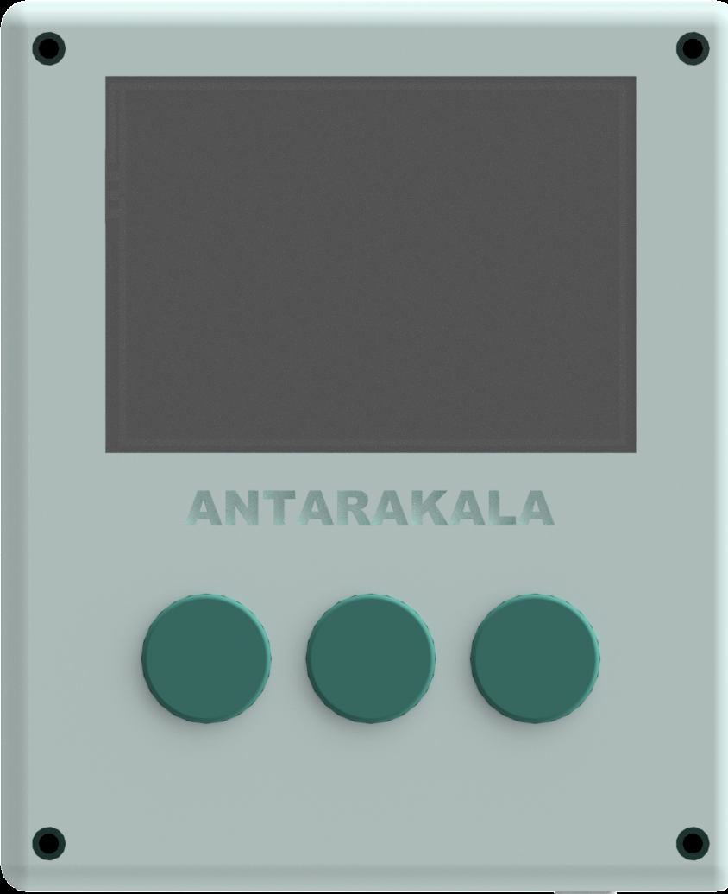

Sambungkan perangkat ANTARAKALA untuk memulai skrining risiko pneumonia balita secara real-time.
Lengkapi informasi dasar pasien untuk memulai skrining pneumonia.
Evaluasi gejala klinis kritis di bawah ini. Pilih "Ada" jika gejala ditemukan selama observasi, atau "Tidak Ada" jika kondisi stabil.
POSTERIOR (PUNGGUNG)
ANTERIOR (DADA)
Pastikan pasien duduk tegak dan tenang. Area dada dan punggung dapat diakses dengan mudah.
Kurangi kebisingan di sekitar ruangan untuk memastikan kualitas rekaman auskultasi optimal.
Operasikan perangkat fisik ANTARAKALA di samping untuk merekam suara paru. Layar ini akan mengikuti secara otomatis.
Pasien: —
Pertemuan: #1
Kecerdasan Buatan (AI) sedang menganalisis suara paru dan parameter klinis untuk mendeteksi kemungkinan pneumonia — seluruhnya berjalan lokal di perangkat, tanpa internet.
Harap tidak menutup layar ini hingga analisis selesai untuk akurasi data maksimal.
POSTERIOR
ANTERIOR
Tinjauan faktor klinis yang mendasari hasil skrining.
Memuat kesimpulan...
*Visualisasi simulasi untuk demonstrasi antarmuka, bukan spektrogram data real.
Faktor-faktor di bawah ini adalah penyebab utama pasien dikategorikan dalam kondisi ini, dihitung oleh mesin skoring LightGBM dan dijelaskan dengan TreeSHAP.
Daftar riwayat skrining pasien dan status rujukan pada sesi demo ini.
